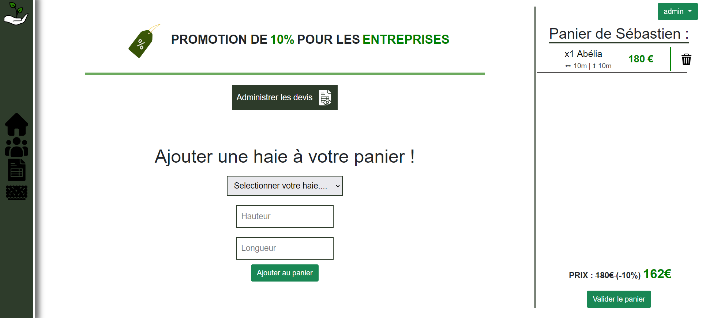
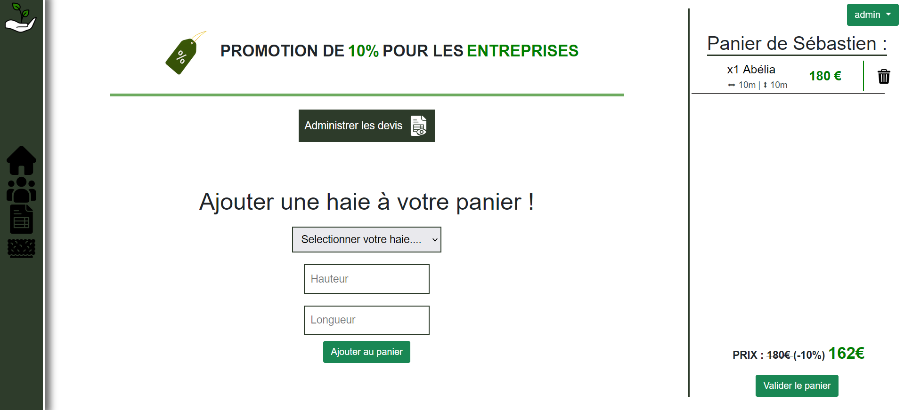

Cette application a été développée en fin de deuxième année de BTS SIO. Créée en PHP grâce au célèbre et très puissant Framework Symfony, ce projet nous a permis de découvrir ce Framework et d’en maitriser les points. L'ensemble de ses fonctionnalités sont des acteurs clés dans le développement back-end en PHP. J'ai beaucoup aimé cet atelier sur Symfony.
L’application est munie du traditionnel système de connexion, créé cette fois le système de sécurité de Symfony qui permet de créer des utilisateurs, gérer leurs roles ainsi que les pages autorisés grâce à l’access control. Ce système inclus aussi l’inscription des utilisateurs.
Nous avons une page qui permet de gérer les utilisateurs de l’application via un CRUD. Or cette page est uniquement accessible si l’utilisateur connecté est administrateur. Il y a également une fonction de recherche. Cette méthode CRUD est réutilisée dans la page qui gère les haies.
La fonctionnalité suivante était la plus importante et la plus technique. Elle correspondant à un système de commande de coupage de haies. L’utilisateur sélectionne les dimensions et il a le droit à une promotion si c’est une entreprise (variable dans l’utilisateur). Après validation, la commande est stockée dans la une variable session et le récapitulatif du panier est affiché, l’utilisateur peut alors supprimer une commande s’il le désir ou bien valider le panier.
 

Un récapitulatif du devis s’affichage ensuite, ce devis est alors stocké dans la base de données. Sur la page précédente, nous avons un bouton permettant de visualiser l’ensemble des devis effectués avec les nombres et dimensions de haies correspondantes. Ce page est uniquement accessible en vue administrateur.